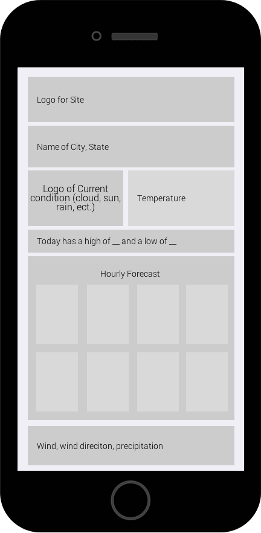
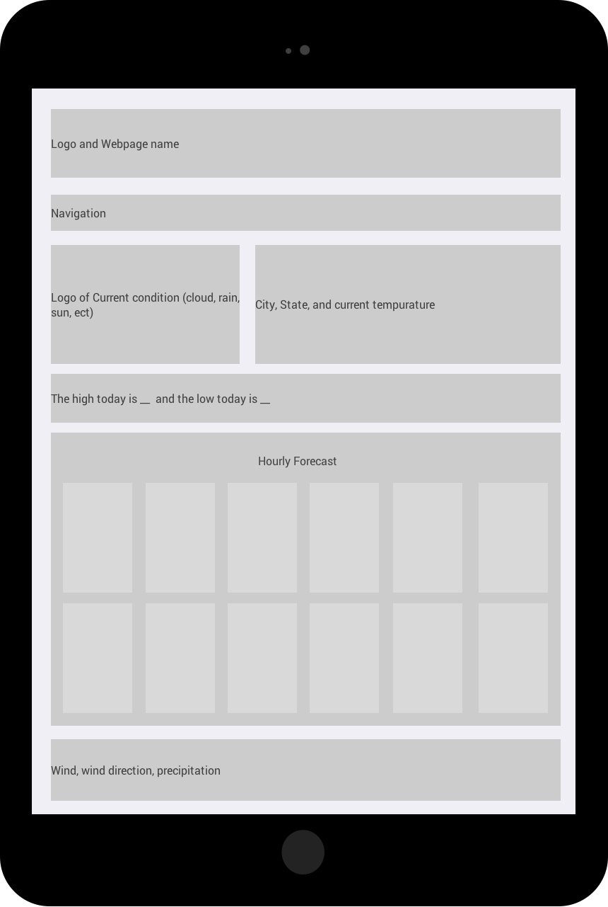
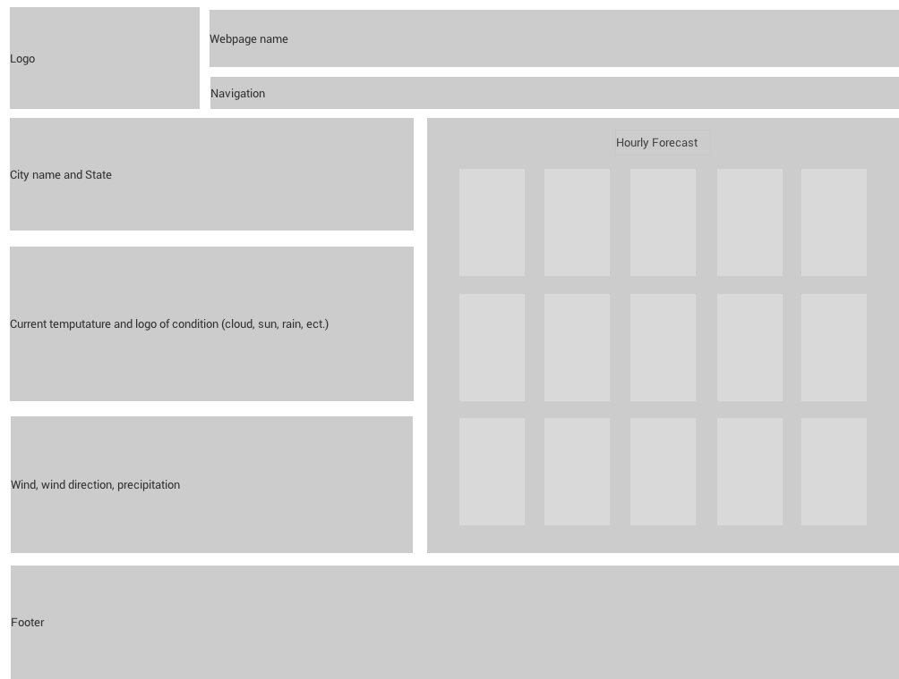

Purpose Statement
The purpose of this site is to give people weather information for the cites of Franklin, Greenville, and Springfield. It provides people with the hourly tempurature as well as precipitation, wind, wind direction, and the high and low tempuratures for the day.
Audience Discription
The typical audience for this website would be adults who are planning outdoor activites, or are preparing to leave home. They would probaby be living in an area with varying weather patterns and also live a fairly active lifestyle because of the interest in being outdoors.
Persona
John is a 35 year old dad who is looking for a great day to take his kids to the mountains. During the week he works as an accountant and makes about 80k a year. His goals involving his trip into the mountains are to go on a 5 mile hike around the middle of the day. Hiking is is favorite hobby and likes to go often.
Wireframes before Peer Review
Mobile Device Wireframe
Tablet Wireframe
Computer Screen Wireframe
Peer Review
Joseph Walker peer reviewed my work and this is what he said:
It looks great. You did a really good job and making a neat wireframe for all three devices. The only thing I see that could be adjusted would maybe be the location of the current precipitation, wind, and wind direction area as that is conventionally grouped with the other current items such as the current temperature that you have listed towards the top. It's totally optional and up to you though. Looks great and well done!
My Comments and How I changed my Wireframes
I really pondered Joseph's comments and took what he said in consideration. I decided to change the location of the current precipitation, wind, and wind direction to put it by the current tempurature. In my wireframes it displays right under the logo of the condition and the current tempurature. It lets the user of the webpage more easily know if the wind would get in the way of a planned or perspective activity.
Wireframes
Mobile Device Wireframe